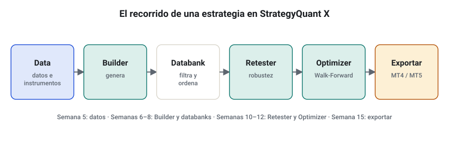
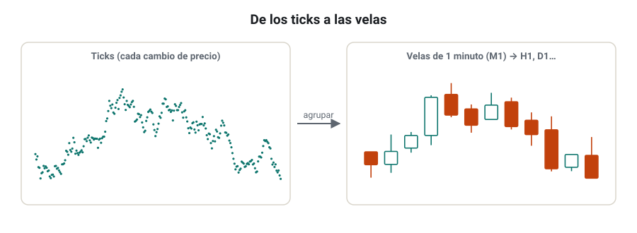
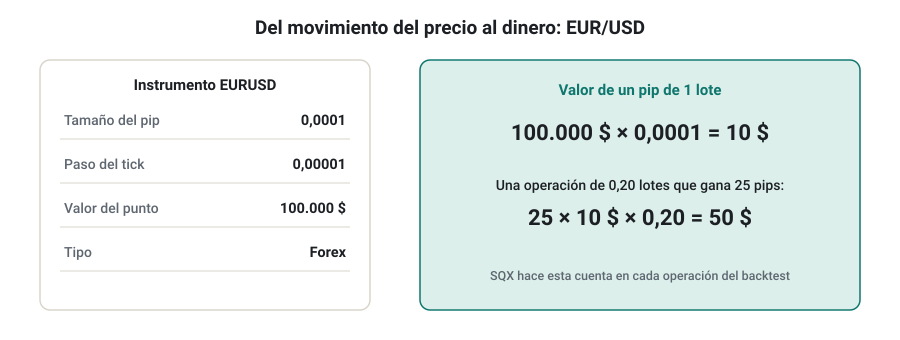
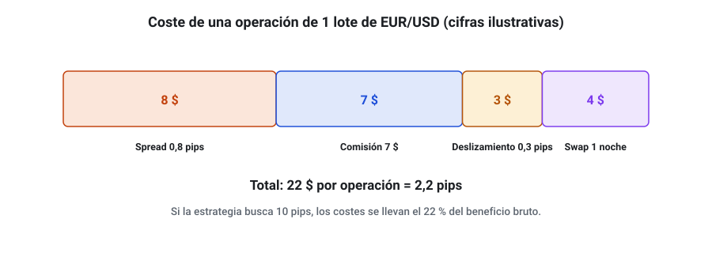
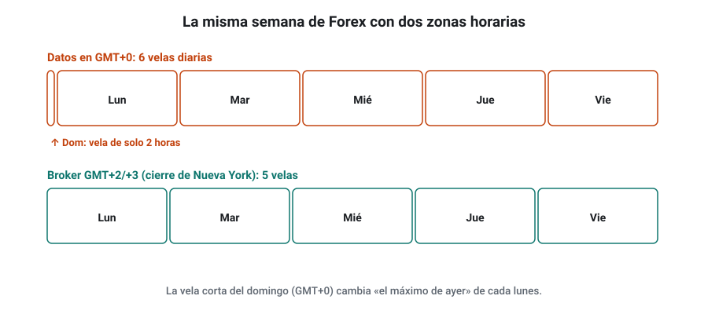

SEMANA 05 · ETAPA 2 · STRATEGYQUANT X
Entorno y datos
Presentación de la semana
Empieza la etapa 2. Durante cuatro semanas trabajarás con StrategyQuant X (SQX), el programa que genera, prueba y exporta estrategias sin que tengas que programar. Esta primera semana no generarás ninguna estrategia: prepararás el terreno. Instalarás el programa, aprenderás a moverte por él y, sobre todo, conseguirás unos datos limpios y alineados con tu broker. Es la semana menos vistosa de la etapa y la que más errores evita: una estrategia generada con datos mal configurados es una estrategia falsa, por buena que parezca.
Objetivos
Al terminar la semana sabrás:
- Elegir la edición y la licencia de SQX que necesitas y comprobar que tu equipo es suficiente.
- Instalar y configurar SQX, incluida la memoria disponible.
- Moverte por la interfaz: módulos, proyectos, resultados y databanks.
- Descargar e importar datos históricos con el Data Manager.
- Configurar un instrumento: tamaño del pip, valor del punto, spread, comisión, swap y deslizamiento.
- Alinear la zona horaria de los datos con la de tu broker y definir sesiones.
- Comprobar que los datos de SQX coinciden con los de MT4 y MT5.
Plan de la semana (22–25 horas)
| Bloque | Horas | Qué harás |
|---|---|---|
| Clases | 6 | Siete lecciones: lectura y vídeos |
| Prácticas | 12 | Instalación, descarga de datos, configuración y comprobación |
| Investigación y evaluación | 4 | Investigación I-05, entrega y examen |
| Revisión y planificación | 2 | Glosario, cuaderno y plan de la semana 6 |
Qué necesitas
- Un ordenador con Windows, macOS o Linux de 64 bits y al menos 8 GB de RAM (lección 1).
- StrategyQuant X instalado. El curso usa la build 140 para las demostraciones; si tienes otra, los menús pueden variar un poco.
- Tu demo de MT4 y MT5 de la semana 2.
- Tu plantilla de métricas de la semana 4.
Criterio para desbloquear la semana 6
Tener en estado APROBADO, con un 80 % o más cada uno:
- ☐ Examen de la semana 5
- ☐ Entrega práctica: ficha de datos de EUR/USD alineada con el broker
- ☐ Investigación I-05: pasos 1 a 4, 7 y 8 documentados
Ediciones, licencia y requisitos del equipo
Formato: clase de 25 minutos · Lectura: 20 minutos
Qué es StrategyQuant X
StrategyQuant X es un programa de escritorio para generar estrategias de trading de forma automática, probarlas con datos históricos, someterlas a pruebas de robustez y exportarlas como código para plataformas como MetaTrader 4 y 5. Lo desarrolla la empresa checa StrategyQuant. Su idea central es la de este curso: no adivinar una estrategia, sino generar muchas y descartar con método las que no resisten.
Ediciones
SQX se vende en tres ediciones. A fecha de consulta (noviembre de 2026), la web oficial las describe así:
| Edición | Para qué sirve | Lo que no incluye |
|---|---|---|
| Starter | Builder, Retester, Improver, editor de estrategias y backtest con precisión de tick | Pruebas de robustez avanzadas, Optimizer y proyectos personalizados (custom projects) |
| Professional | Todo lo anterior, más pruebas de robustez avanzadas, Optimizer (incluido Walk-Forward) y custom projects | Herramientas de cartera completas, QuantAnalyzer Pro y módulos premium |
| Ultimate | Todo lo anterior, más QuantAnalyzer Pro, Portfolio Master y Composer sin límite, y módulos premium | — |
Los precios cambian con frecuencia y hay promociones; consúltalos siempre en la web oficial. Las licencias son de por vida para la versión adquirida, con un periodo de actualizaciones y soporte que depende de la edición, y cada licencia es para un ordenador.
Para este curso, la edición Professional es la mínima recomendada, porque las semanas 10 a 12 usan Walk-Forward y pruebas de robustez que la Starter no incluye. Si tienes la Starter, podrás seguir la etapa 2, pero tendrás que hacer parte de la validación de la etapa 3 de otra forma.
Requisitos del equipo
Los requisitos mínimos publicados son: sistema operativo Windows de 64 bits, macOS o Linux; procesador de 2 GHz y 2 núcleos; 8 GB de RAM; y 10 GB de disco. SQX usa todos los núcleos del procesador, así que, con más núcleos, genera y prueba más estrategias por hora.
Recomendaciones prácticas del curso:
- RAM: 16 GB o más. Los datos de tick y los databanks grandes consumen mucha memoria.
- Disco: un SSD con 50 GB libres, porque los datos de varios años de varios símbolos ocupan mucho.
- Procesador: cuantos más núcleos, mejor. Un portátil de 4 núcleos sirve para aprender; para investigar a fondo, un sobremesa con 8 o más.
- Energía: desactiva la suspensión mientras genera; un proyecto puede estar horas en marcha.
Comprueba que lo has entendido
- ¿Qué edición necesitas como mínimo para seguir la etapa 3 completa y por qué?
- ¿Por qué SQX no «encuentra» estrategias rentables?
- Revisa tu ordenador: ¿cuántos núcleos y cuánta RAM tiene? ¿Cumple el mínimo?
Instalación, configuración y memoria
Formato: taller de 30 minutos · Práctica: 1 hora
Instalación
- Descarga el instalador desde tu cuenta en la web de StrategyQuant (en Downloads o la sección equivalente de tu área de cliente).
- Instálalo en una carpeta con permisos de escritura y espacio suficiente. En Windows, evita
Archivos de programasi te da problemas de permisos: una carpeta comoC:\StrategyQuantXfunciona bien. - Abre el programa e introduce tu licencia cuando te la pida.
- La interfaz de SQX está construida con tecnología web y corre en tu ordenador; según la versión y el sistema, se abre en su propia ventana o en el navegador. Si no se abre, consulta la guía de instalación de tu build en la documentación oficial.
La carpeta del usuario
SQX guarda en su carpeta de instalación (o en la de usuario) los datos históricos, los proyectos, los databanks y las estrategias. Localízala desde el primer día y:
- Haz copias de seguridad de tus proyectos y estrategias en otra unidad o en la nube.
- No la sincronices en vivo con servicios como Dropbox o OneDrive mientras SQX trabaja: la sincronización de miles de archivos pequeños puede ralentizar o bloquear el programa.
La memoria
SQX funciona sobre Java y solo puede usar la memoria que tiene asignada. Si la asignación es pequeña, verás el programa lento o mensajes de falta de memoria con databanks grandes. Como orientación, asigna entre la mitad y dos tercios de la RAM de tu equipo, dejando el resto para el sistema y para MetaTrader.
El ajuste de memoria está en la configuración de la aplicación (en la build 140, en los ajustes generales del programa). Después de cambiarlo, reinicia SQX.
Ajustes que conviene revisar
- Idioma y formato numérico. El programa está en inglés; los nombres de este curso aparecen en inglés entre paréntesis la primera vez.
- Núcleos que usa. Puedes limitar los núcleos si quieres seguir usando el ordenador mientras genera.
- Actualizaciones. Antes de actualizar de build, termina los proyectos en curso: un cambio de build puede cambiar resultados o configuraciones.
Comprueba que lo has entendido
- ¿Por qué no conviene sincronizar en vivo la carpeta de SQX con la nube?
- Tu ordenador tiene 16 GB de RAM. ¿Cuánta memoria asignarías a SQX?
- ¿Qué anotarás en tu cuaderno sobre la instalación?
Interfaz, módulos y databanks
Formato: clase de 30 minutos · Lectura: 25 minutos
Los módulos
SQX se organiza en módulos, cada uno con una función. Los verás en la barra principal:
| Módulo | Para qué sirve | Semana |
|---|---|---|
| Builder | Genera estrategias nuevas a partir de bloques, de forma aleatoria o genética | 6 |
| Retester | Vuelve a probar estrategias con otros datos, costes o pruebas de robustez | 6 y 10 |
| Optimizer | Optimiza parámetros y hace Walk-Forward | 11 |
| Improver | Intenta mejorar una estrategia existente | 8 |
| AlgoWizard | Construye a mano una estrategia con reglas propias, sin programar | 8 |
| Custom projects | Encadena tareas en un flujo automático | 12 |
| Data | El Data Manager: datos históricos, instrumentos y sesiones | 5 |
| Code editor | Edita bloques y código (no lo usarás en el curso) | — |

Proyectos, tareas y resultados
En el Builder y los demás módulos trabajas con proyectos: cada proyecto guarda su configuración (qué datos, qué bloques, qué costes, qué filtros). Al lanzarlo, el programa muestra el progreso y va guardando estrategias en sus resultados.
Los databanks
Un databank es una tabla de estrategias con sus métricas. Cada proyecto tiene uno o varios databanks; por ejemplo, el Builder guarda en un databank las estrategias que pasan los filtros. Desde un databank puedes:
- Ordenar y filtrar por cualquier métrica: profit factor, número de operaciones, drawdown, etc.
- Abrir una estrategia y ver sus resultados detallados, su curva y sus reglas.
- Enviarla a otro módulo, por ejemplo al Retester.
- Exportarla a MT4 o MT5 (semana 15).
Comprueba que lo has entendido
- ¿Qué módulo usarías para volver a probar una estrategia con un spread mayor?
- ¿Qué es un databank y qué puedes hacer desde él?
- ¿Por qué no debes elegir una estrategia por su beneficio neto?
Data Manager: fuentes, descarga e importación
Formato: clase de 35 minutos · Práctica: 1 hora
Por qué los datos son lo primero
Todo lo que haga SQX depende de los datos históricos. Si faltan días, si hay precios erróneos o si la hora no coincide con la de tu broker, el programa generará estrategias que aprovechan esos errores y que fallarán en real. Basura entra, basura sale.
Tipos de datos
- Datos de tick: cada cambio de precio, con su bid y su ask. Son los más precisos y los que más ocupan.
- Datos de minuto (M1): una vela por minuto con apertura, máximo, mínimo y cierre. Son el estándar para generar estrategias en SQX: a partir de ellos, el programa construye cualquier temporalidad mayor (M5, H1, D1…).
- Datos de temporalidad mayor (H1, D1): útiles para análisis rápidos, pero insuficientes para simular bien dónde se ejecutaron los stops dentro de una vela.

Fuentes
- Datos gratuitos incluidos. SQX permite descargar datos de Forex, CFD y criptomonedas desde el propio Data Manager. Son una buena base para aprender y para investigar Forex. Infórmate de qué proveedor los genera y en qué zona horaria vienen (lección 6).
- Datos de tu broker. Puedes exportar el historial de MT4 o MT5 e importarlo. Tienen la ventaja de ser los precios de tu broker, pero suelen tener menos historia y, a veces, huecos.
- Proveedores de pago. Para acciones y futuros, SQX ofrece datos premium en algunas ediciones, y existen otros proveedores comerciales. Lo verás en la semana 9.
Descargar e importar
En la build 140, el Data Manager está en la pestaña Data. El proceso general es:
- Elegir o crear el símbolo (por ejemplo, EURUSD) y su instrumento asociado (lección 5).
- Descargar los datos del proveedor gratuito o importar un archivo (CSV) con el asistente de importación, indicando el formato de fecha, el separador y la zona horaria.
- Revisar los datos: rango de fechas, número de velas, huecos y precios anómalos.
Al importar un CSV, fíjate en el formato de fecha (día/mes o mes/día), en el separador decimal y en si los precios son bid o ask. Un error en cualquiera de ellos estropea los datos sin que el programa avise.
Comprueba que lo has entendido
- ¿Por qué SQX trabaja normalmente con datos M1 aunque generes estrategias en H1?
- Nombra una ventaja y un inconveniente de usar los datos de tu broker.
- ¿Qué tres cosas revisas en un CSV antes de importarlo?
Instrumentos: tamaño de pip, valor del tick, spread, comisión, swap y deslizamiento
Formato: clase de 40 minutos · Lectura: 35 minutos
Qué es un instrumento en SQX
Los datos son solo precios. Para convertir un movimiento de precio en dinero, SQX necesita saber las características del instrumento. Se definen en el Data Manager, y los campos principales son:
| Campo | Qué es | EUR/USD (5 decimales) |
|---|---|---|
| Tamaño del pip o tick (pip/tick size) | Lo que vale un pip en precio | 0,0001 |
| Paso del pip o tick (pip/tick step) | El movimiento mínimo de precio de tu broker | 0,00001 |
| Valor del punto (point value) | Dinero, en dólares, que gana 1 lote si el precio se mueve una unidad entera | 100.000 $ |
| Spread por defecto | Spread que se usará si el proyecto no indica otro, en pips | Según tu broker |
| Tipo de datos | Forex, CFD, futuros, acciones, cripto… | Forex |

El valor del punto confunde al principio. Con EUR/USD, si el precio pasara de 1,0000 a 2,0000 (una unidad entera), 1 lote de 100.000 euros ganaría 100.000 $. Por eso el valor del punto es 100.000. Y un pip (0,0001) de 1 lote vale 100.000 × 0,0001 = 10 $, que es lo que ya conocías.
Los costes
En SQX, los costes se configuran sobre todo en cada proyecto (en su pestaña de datos o de opciones de trading), no solo en el instrumento. Son cuatro:
- Spread: en pips. Usa un valor realista o algo pesimista: el spread medio de tu broker en las horas en que operará la estrategia, no el mínimo que anuncia.
- Comisión: por lote y operación. En cuentas raw o ECN, la comisión es la parte principal del coste.
- Swap: el interés por mantener posiciones de un día a otro, distinto para compras y ventas.
- Deslizamiento (slippage): pips de peor ejecución que añades a cada entrada o salida a mercado.

Comprueba que lo has entendido
- ¿Cuál es el valor del punto de un instrumento cuyo lote es de 100.000 unidades y cotiza en dólares?
- ¿Por qué el valor del punto de USD/JPY es solo una aproximación?
- Tu broker anuncia un spread «desde 0,1 pips» en EUR/USD. ¿Qué valor pondrías en SQX y por qué?
Zona horaria del broker y sesiones
Formato: clase de 35 minutos · Lectura: 30 minutos
Por qué importa la hora
Las estrategias usan la hora: «no operar antes de las 8:00», «cerrar el viernes», «usar el máximo de ayer». Si la hora de tus datos no coincide con la de tu broker, la estrategia hará en real algo distinto de lo que hizo en el backtest. Y hay un efecto menos evidente: las velas diarias cambian.
Zonas horarias habituales
- Datos gratuitos de Forex: suelen venir en GMT/UTC (GMT+0).
- Muchos brokers de MetaTrader: usan GMT+2 en invierno y GMT+3 en verano. Así, la vela diaria cierra a las 17:00 de Nueva York, el cierre habitual del mercado de divisas, y la semana tiene exactamente 5 velas diarias.
- Si usas datos en GMT+0: la semana tiene 6 velas diarias, porque aparece una vela corta el domingo con las horas de apertura de Asia.

Con 6 velas, «el máximo de ayer» un lunes es el máximo de unas pocas horas del domingo. Una estrategia diaria generada así no se parece a la que ejecutará tu broker.
Cómo averiguar la zona horaria de tu broker
- Abre MT4 o MT5 y mira la hora del servidor en la ventana Observación del mercado (Market Watch).
- Compárala con la hora UTC actual (búscala en internet). La diferencia es el desfase del servidor.
- Comprueba si cambia con el horario de verano. Muchos brokers lo indican en su web o en sus especificaciones.
- Cuenta las velas diarias de una semana en el gráfico D1: 5 velas confirman el cierre de Nueva York.
Alinear los datos en SQX
Al descargar o importar datos, el Data Manager permite indicar o convertir la zona horaria. La regla del curso:
Las sesiones
En SQX, una sesión define en qué horas y días hay mercado para un símbolo, y se usa para construir las velas y para las reglas que dependen del horario. Para Forex basta normalmente con una sesión continua de domingo a viernes; para índices o acciones necesitarás la sesión de su mercado, con sus festivos y cierres.
Comprueba que lo has entendido
- Tus datos están en GMT+0 y tu broker en GMT+2/+3. ¿Qué pasará con las velas diarias?
- ¿Cómo comprobarías en MT5 la zona horaria de tu broker?
- Una estrategia «solo opera de 9:00 a 12:00». ¿Qué hora es esa si los datos están en GMT+0 y la ejecutas en un broker en GMT+2?
Taller: datos de EUR/USD alineados con el broker y comprobados en MT4 y MT5
Formato: taller guiado de 60 minutos · Práctica: 4–5 horas
En este taller prepararás los datos que usarás en las semanas 6 a 8: EUR/USD en M1, alineado con tu broker y comprobado.
Paso 1 · Ficha del broker
Recupera la ficha de la semana 2 y añade: zona horaria del servidor en invierno y en verano, spread medio que mediste en las horas de Europa y comisión por lote de tu cuenta.
Paso 2 · Descarga los datos
En el Data Manager, descarga al menos 10 años de datos M1 de EUR/USD (por ejemplo, de 2014 a hoy) con la zona horaria de tu broker. Si el programa no permite convertirla al descargar, anota en qué zona vienen y cómo lo resolverás.
Paso 3 · Configura el instrumento
Revisa los campos del instrumento EURUSD: tamaño del pip 0,0001, paso 0,00001, valor del punto 100.000 $, tipo Forex y spread por defecto igual al medio que mediste.
Paso 4 · Revisa la calidad
- Rango de fechas y número de velas.
- Huecos: ¿faltan días laborables? Una semana normal de Forex tiene unas 7.200 velas M1 (5 días × 24 horas × 60 minutos).
- Precios anómalos: velas con un máximo o un mínimo absurdos.
- Número de velas diarias por semana en una semana cualquiera: deberían ser 5.
Paso 5 · Compara con MT4 y MT5
Elige 5 velas H1 de días distintos del último mes y anota apertura, máximo, mínimo y cierre en SQX, en MT4 y en MT5. Calcula la diferencia en pips. Diferencias de 1 o 2 pips son normales entre proveedores; diferencias mayores, o velas desplazadas una o varias horas, indican un problema de zona horaria.
Paso 6 · Documenta
Rellena la ficha de datos de la entrega: fuente, zona horaria, rango, huecos encontrados, configuración del instrumento y resultado de la comparación.
Comprueba que lo has entendido
- ¿Cuántas velas diarias por semana tienen tus datos?
- ¿Qué diferencia media en pips encontraste con tu broker?
- Si encontraste velas desplazadas una hora en verano, ¿qué significa?
Glosario de la semana
| Término | Inglés | Definición |
|---|---|---|
| AlgoWizard | AlgoWizard | Módulo de SQX para construir estrategias propias sin programar |
| Build | Build | Versión concreta del programa |
| Builder | Builder | Módulo de SQX que genera estrategias nuevas |
| Comisión | Commission | Pago al broker por lote y operación |
| Custom project | Custom project | Flujo de tareas encadenadas en SQX |
| Databank | Databank | Tabla de estrategias con sus métricas dentro de SQX |
| Data Manager | Data Manager | Parte de SQX que gestiona datos, instrumentos y sesiones |
| Datos de tick | Tick data | Cada cambio de precio con su bid y su ask |
| Datos M1 | M1 data | Velas de un minuto |
| Deslizamiento | Slippage | Diferencia entre el precio esperado y el ejecutado |
| Desfase horario | Time zone offset | Horas de diferencia entre una zona horaria y GMT/UTC |
| GMT / UTC | GMT / UTC | Hora de referencia mundial |
| Instrumento | Instrument | Definición de un símbolo con sus características de precio y valor |
| Paso del tick | Tick step | Movimiento mínimo de precio que permite el broker |
| Retester | Retester | Módulo de SQX que vuelve a probar estrategias |
| Sesión | Session | Horas y días en que hay mercado para un símbolo |
| Spread por defecto | Default spread | Spread que usa SQX si el proyecto no indica otro |
| Tamaño del pip | Pip size | Lo que vale un pip en precio |
| Valor del punto | Point value | Dinero que gana 1 lote por un movimiento de una unidad entera de precio |
| Zona horaria del broker | Broker time zone | Hora del servidor de tu broker respecto a GMT |
Ejercicios obligatorios
E1 · Edición. Elige la edición de SQX que necesitas para el curso. Consulta la web oficial y anota el precio actual, la fecha de consulta y qué incluye. Explica tu elección en 100 palabras.
E2 · Tu equipo. Anota el procesador, los núcleos, la RAM y el disco libre de tu ordenador. ¿Cumple el mínimo? ¿Cuánta memoria asignarías a SQX?
E3 · Valor del punto. Calcula el valor del punto en dólares para 1 lote de: a) GBP/USD (100.000 libras); b) un CFD del DAX de 1 € por punto, con el EUR/USD a 1,0800 (un punto entero del índice); c) USD/JPY (100.000 dólares), con el USD/JPY a 150,00.
E4 · Pip en dinero. Con un valor del punto de 100.000 $ y un tamaño de pip de 0,0001, ¿cuánto vale un pip de 0,25 lotes?
E5 · Costes. Una operación de 1 lote de EUR/USD paga un spread de 0,9 pips, una comisión de 7 $ ida y vuelta, 0,3 pips de deslizamiento y ninguna noche de swap. Calcula el coste total en dólares y en pips.
E6 · Coste y objetivo. Con el coste del E5, ¿qué porcentaje del beneficio se lleva el coste si la estrategia busca 10 pips? ¿Y si busca 40?
E7 · Velas M1. ¿Cuántas velas M1 tiene, aproximadamente, un año de Forex? ¿Y 10 años?
E8 · Zona horaria. Tu broker está en GMT+2 en invierno y GMT+3 en verano. Una noticia sale a las 14:30 de Madrid. ¿Qué hora marca el servidor en invierno y en verano? (Madrid: GMT+1 en invierno, GMT+2 en verano.)
E9 · Velas diarias. Explica con un ejemplo por qué una estrategia que compra «si el precio supera el máximo de ayer» puede comportarse distinto con datos en GMT+0 que con datos en GMT+2/+3.
E10 · Importación. Un CSV tiene la línea 03/04/2025 14:00,1.08215,1.08290,1.08190,1.08240,1520. Escribe qué dudas tendrías antes de importarlo y cómo las resolverías.
Investigación I-05 y entrega práctica
Investigación I-05 · ¿Coinciden mis datos con los de mi broker?
Paso 1 · Hipótesis. Ejemplo: «Los datos M1 de EUR/USD descargados en SQX, convertidos a la zona horaria de mi broker, difieren de los de mi broker en menos de 1 pip de media en apertura y cierre de las velas H1».
Paso 2 · Fuentes. Busca y cita información oficial o del foro de StrategyQuant sobre la zona horaria de los datos gratuitos y sobre cómo alinearlos con un broker. Anota la fecha y si es documentación oficial u opinión de usuarios.
Paso 3 · Datos. Datos de SQX del taller y datos de tu broker de MT4 o MT5 (exporta el historial H1 o anótalo a mano) de al menos 20 velas H1 de días y horas distintas, incluido algún lunes por la mañana y algún viernes por la tarde.
Paso 4 · Diseño del experimento. Antes de comparar, define: qué velas vas a elegir y cómo (al azar o con un criterio fijado de antemano), qué precio comparas (apertura, máximo, mínimo y cierre), cómo mides la diferencia (en pips, en valor absoluto) y qué diferencia media consideras aceptable.
Paso 7 · Comparación. Calcula la diferencia media y máxima de cada precio. Busca patrones: ¿son mayores en ciertos horarios? ¿Hay velas desplazadas?
Paso 8 · Conclusiones. ¿Se confirma tu hipótesis? ¿Usarías estos datos para generar estrategias? ¿Qué limitaciones tiene comparar solo 20 velas?
Entrega práctica · Ficha de datos de EUR/USD
Qué entregar
| Archivo | Contenido |
|---|---|
CODIGO_S05_ENT |
Ficha de datos: build de SQX, fuente de los datos, zona horaria, rango de fechas, número de velas, huecos, configuración completa del instrumento y costes que usarás |
| Capturas | Del Data Manager con el símbolo y el rango de datos, de la configuración del instrumento y del gráfico D1 de una semana con sus velas |
CODIGO_S05_INV |
Hoja de la investigación I-05 |
| Ejercicios | E1 a E10 resueltos |
Cómo se evaluará
Se valora que los datos estén alineados con el broker y que la ficha permita a otra persona reproducir tu configuración. Si falta la zona horaria o la comparación con el broker, la entrega queda como NO EVALUABLE.
Examen de la semana 5 · Variante A
Tiempo orientativo: 60 minutos · Puntuación: 100 puntos · Aprobado: 80 puntos · Puedes usar calculadora, pero no el material del curso ni el tutor de IA. Si suspendes, repetirás con otra variante.
Parte A · Opción múltiple (30 puntos, 2 por pregunta)
Parte B · Cálculo (45 puntos, 15 por ejercicio)
B1. Una operación de 0,50 lotes de EUR/USD paga 1,1 pips de spread, una comisión de 3,50 $ por lote y lado (abrir y cerrar) y 0,4 pips de deslizamiento total. Calcula el coste total en dólares y en pips, y qué parte del beneficio se lleva si la operación gana 15 pips.
B2. Tu broker está en GMT+2 (invierno). Tus datos están en GMT+0. a) Una regla dice «entrar a las 08:00» con los datos sin convertir: ¿a qué hora del servidor entraría en real? b) ¿Y a qué hora de Madrid (GMT+1)? c) ¿Cuántas velas diarias por semana verías en cada caso?
B3. Un instrumento cotiza en dólares con lotes de 10 unidades (como algunos CFD sobre índices). a) ¿Cuál es su valor del punto? b) ¿Cuánto gana 1 lote si el precio sube 35,5 puntos? c) ¿Y 0,3 lotes?
Parte C · Razonamiento (25 puntos)
En un máximo de 250 palabras: un compañero ha generado una estrategia diaria de EUR/USD con datos en GMT+0, con el spread a cero, y dice que tiene un profit factor de 2,4. Explica qué problemas tiene su configuración y qué pasos debería seguir para que el resultado sea fiable.